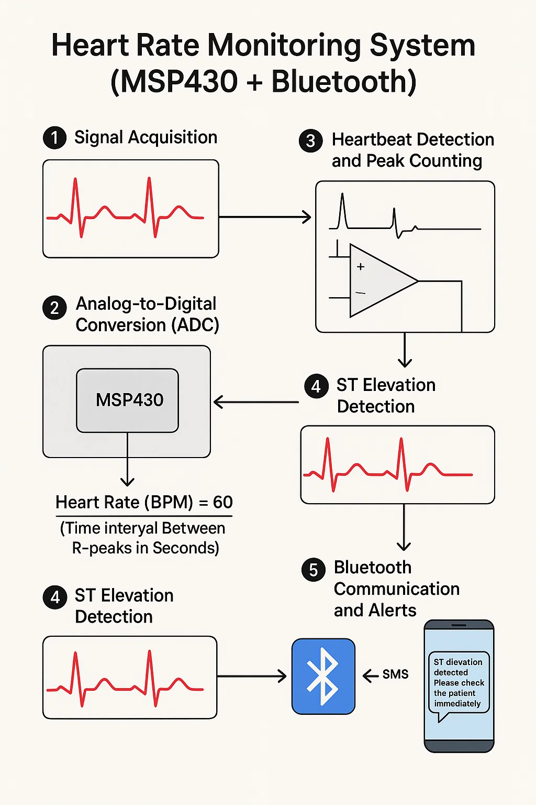

This project aimed to build a real-time heart rate monitoring system using a Texas Instruments MSP430 microcontroller. The system acquired ECG signals, processed them to determine heart rate and detect ST elevation (a sign of possible heart attack), and sent an alert to a paired mobile phone using Bluetooth.
To accurately capture the ECG waveform, I used a differential amplifier at the front end. This setup offers common-mode noise rejection, which is crucial when acquiring biological signals like ECG that are often small in amplitude and susceptible to electrical noise.
The analog signal was then passed through the internal ADC of the MSP430 microcontroller. According to the Nyquist Theorem, the sampling frequency must be at least twice the maximum expected signal frequency. ECG signals typically have frequencies below 150 Hz, so I sampled at over 300 Hz to preserve waveform fidelity.
The digitized ECG signal was analyzed in real time to detect R-peaks. Each detected peak represents a heartbeat. The time intervals between these peaks were used to calculate the heart rate (in BPM). The heart rate was computed using:
Heart Rate (BPM) = 60 / (Time Interval Between R-peaks in Seconds)
The algorithm also included basic ST segment analysis. If the signal showed elevated ST segments compared to a baseline, it triggered an alert, as this could be an early sign of myocardial infarction.
A Bluetooth module (e.g., HC-05) was interfaced with the MSP430 using UART. Upon detecting ST elevation, the MSP430 sent an AT command to the Bluetooth module to transmit a pre-defined SMS to a paired mobile device.
AT+CMGS="+1234567890" ST elevation detected. Please check the patient immediately.
This project demonstrated a low-power, real-time biomedical monitoring system capable of detecting critical cardiac events and alerting caregivers remotely via Bluetooth. The modularity and affordability of the MSP430 platform made it ideal for wearable or remote health applications.
